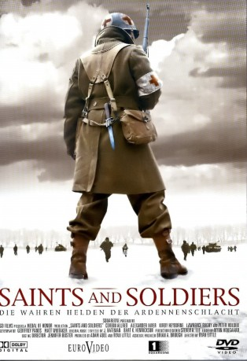

#10227 Saints and Soldiers 1 – Die wahren Helden der Ardennenschlacht
 
 IMDB-Wertung: 6.8 / 10
IMDB-Wertung: 6.8 / 10  Metascore: 56
Metascore: 56 
Winter 1944: Während der Ardennenschlacht nimmt die Wehrmacht in den belgischen Wäldern eine amerikanische Einheit gefangen. Corporal Nathan Greer, sein enger Freund Gordon Gunderson und hunderte GIs sind der Willkür der deutschen Soldaten ausgeliefert. Als sich die Amerikaner gegen Übergriffe wehren, geschieht das Schreckliche: Die Deutschen eröffenen das Feuer auf die Gefangenen. Nur Greer, Gunderson und einige andere entkommen diesem Blutbad, das in die Geschichtsbücher als Malmedy Massaker einging. Auf der Flucht schließt sich ihnen ein britischer Nachrichtenoffizier an, der hochbrisante Informationen über geheime Truppenstellungen der Deutschen besitzt. Die Flüchtenden haben nur eine Chance, sie müssen sich durch die feindlichen Linien auf das von den Alliierten kontrollierte Gebiet durchschlagen. Doch die Deutschen beginnen eine erbarmungslose Jagd auf die Überlebenden, denn niemand soll von dem Massaker und den Geheiminformationen erfahren.
Jahr: 2003
Dauer: 90 Minuten
FSK: 12
Land: USA Studio: Cinedigm Entertainment GroupTonspuren: DTS - ,
Untertitel:
Auflösung: 1080p (1920x1040) Größe: 6993 MB
Genre: Action, Drama, Krieg
Regisseur: Ryan Little
Drehbuch: Geoffrey Panos, Geoffrey Panos, Matt Whitaker
Soundtrack: J Bateman, Bart Hendrickson
Darsteller:
- Corbin Allred als Cpl. Nathan 'Deacon' Greer
 Alexander Polinsky als Medic Steven Gould
Alexander Polinsky als Medic Steven Gould- Kirby Heyborne als Flt. Sgt. Oberon Winley
- Larry Bagby als Pvt. Shirley 'Shirl' Kendrick
- Peter Holden als SSgt. Gordon Gunderson
- Ethan Vincent als Rudolph 'Rudi' Gertz
- Melinda Renee als Catherine Theary
- Ruby Chase als Sophie Theary
- Benjamin Gourley als Private McKinley
- Curt Doussett als German Soldier #1
- Lincoln Hoppe als German Soldier #3
- Jason Allred als Peeing German
- Joel Bishop als German Soldier #4
- Gavin Bentley als American Foxhole Soldier #2
- Chris Kendrick als Sergeant Meldrum
- John Robert als WWII Re-Enactor
- Crit Killen als WWII Re-Enactor
- Ryan Templeman als WWII Re-Enactor
- Trenton James als WWII Re-Enactor
- Jeff Birk als Radio Announcer
- Tane Williams als Injured One-Armed Soldier
- Randy Beard als German Officer #1
- Michael Buster als German Soldier #2
- M. Casey Reeves als Weeping Soldier
- Chris Clark als American Soldier #1
- Christian Lee als Conversing German #1
- Christian Malzl als Conversing German #2
- Philip Malzl als Conversing German #3
- Dawn Graham als Ghost Figure
- Julie Graham als Ghost Figure
- Addy Meldrum als Ghost Figure
- Matthew Meldrum als Ghost Figure
- McKay Meldrum als Ghost Figure
- Kelly Moyle als Ghost Figure
- Kelly Klindt als German Officer #2
- Michael Tanner als American Foxhole Soldier #1
- Spencer Funk als German Soldier #5
- Sterling Funk als German Soldier #6
- Bill Ferguson als American Medic #1
- Richard J. Clifford als American Medic #2
- Aaron Moffett als WWII Re-Enactor
- David Jones als WWII Re-Enactor
- John Lewis als WWII Re-Enactor
- Nick Stentzel als WWII Re-Enactor
- Aaron Volesky als WWII Re-Enactor
- David Murphy als WWII Re-Enactor
- Oliver Burt als WWII Re-Enactor
- Adam McGrath als WWII Re-Enactor
- David Swansen als WWII Re-Enactor
- Jonathan Craddock als WWII Re-Enactor
Datei: X:\3-Trilogie(N-Z)\Saints and Soldiers\Saints and Soldiers 1 – Die wahren Helden der Ardennenschlacht (2003, FSK12, 1920x1040).mkv seit 25.12.2018
Festplatte: HD Collection-3(N-Z)-6(A-Z)
 Alle Filme aus Gruppe '3-Trilogie(N-Z)\Saints and Soldiers'
Alle Filme aus Gruppe '3-Trilogie(N-Z)\Saints and Soldiers'